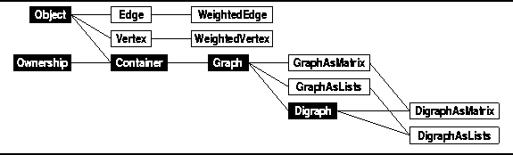

Data Structures and Algorithms
with Object-Oriented Design Patterns in C++
Data Structures and Algorithms
with Object-Oriented Design Patterns in C++
In keeping with the design framework used throughout this text,
we view graphs as specialized containers.
Formally, the graph  is an ordered pair
comprised of two sets--a set of vertices and a set of edges.
Informally, we can view a graph as a container with two compartments,
one which holds vertices and one which holds edges.
Therefore, there are three kinds of objects--vertices, edges, and graphs.
Accordingly, we need three object classes:
Vertex, Edge, and Graph.
(See Figure
is an ordered pair
comprised of two sets--a set of vertices and a set of edges.
Informally, we can view a graph as a container with two compartments,
one which holds vertices and one which holds edges.
Therefore, there are three kinds of objects--vertices, edges, and graphs.
Accordingly, we need three object classes:
Vertex, Edge, and Graph.
(See Figure  ).
).

Figure: Object Class Hierarchy
 Copyright © 1997 by Bruno R. Preiss, P.Eng. All rights reserved.
Copyright © 1997 by Bruno R. Preiss, P.Eng. All rights reserved.